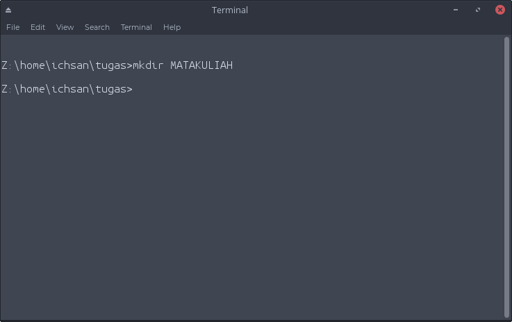
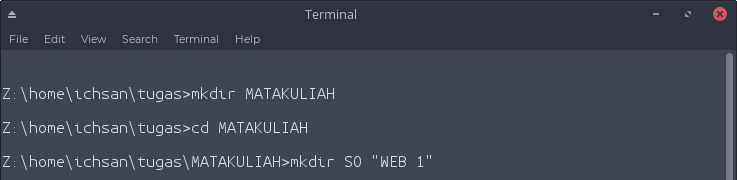

|
1. buatlah struktur direktori seperti dibawah ini, tampilkan seluruh langkah yang diperlukan
Bismillaahirrahmaanirrahiim,
pada kesempatan kali ini kita akan menyelesaikan soal di atas, secara singkat inti dari soal tersebut adalah kita diharuskan membuat struktur direktori dan subdirektorinya sesuai dengan gambar yang ditentukan
Dan pada kesempatan kali ini saya insyaaAllah akan menjelaskan penyelesaiaannya dengan membagi subdirektori-subdirektori tersebut berdasarkan kedalamannya. Dan dapat dilihat di struktur tersebut bahwa terdapat level-level kedalaman dari direktori,contoh = level 1 ditempati oleh MATAKULIAH, level 2 oleh SO dan WEB dst...
Dan sebagai catatan, khusus untuk kasus kali ini saya menggunakan wine cmd yang merupakan emulator command prompt dilinux. Secara fitur saya rasa lebih dari cukup untuk menyelesaikan soal ini
-
Yang pertama adalah kita buat direktori level 1, direktori MATAKULIAH
Untuk membuatnya dapat digunakan perintah mkdir yang merupakan command untuk membuat direktori (mkdir = MaKe DIRectory).
Lalu ketik :
mkdir MATAKULIAH

-
Langkah Selanjutnya adalah membuat direktori tingkat 2, yaitu SO & WEB 1 dengan mengetik perintah
mkdir SO "WEB 1"
perlu diperhatikan,dalam pembuatan folder yang menggunakan karakter spasi kita membutuhkan tanda kutip di folder yang kita akan buat, misal untuk membuat folder WEB 1 kita harus mengetik perintah mkdir "WEB 1" .
karena jika kita mengetik perintah mkdir WEB 1, maka cmd akan membuat dua folder, satu folder WEB satu lagi folder 1
sebagaimana di contohkan spasi dalam pembuatan folder akan membuat lebih dari satu folder, seperti di contoh di atas mkdir SO "WEB 1"

-
Selanjutnya kita akan membuat subdirektori dari SO , yaitu MATERI ,TUGAS ,UAS ,UTS dengan mengetikan perintah :
cd SO >>
mkdir MATERI TUGAS UAS UTS
perintah cd berfungsi untuk berpindah fokus direktori
-
Selanjutnya kita akan melanjutkan membuat subdirektori dari MATERI , yaitu DASAR & LANJUTAN dengan mengetikan perintah :
cd MATERI >>
mkdir DASAR LANJUTAN >>
cd ..
perintah cd.. berfungsi untuk mundur ke satu direktori ke atas
-
Selanjutnya kita akan melanjutkan membuat subdirektori dari TUGAS , yaitu DUA & SATU dengan mengetikan perintah :
cd TUGAS >>
mkdir DUA SATU
-
Selanjutnya kita akan melanjutkan membuat subdirektori dari SATU , yaitu AWAL & AKHIR dengan mengetikan perintah :
cd SATU >>
mkdir AWAL AKHIR
-
Selanjutnya kita akan melanjutkan membuat subdirektori dari UAS, Sebelumnya kita harus mundur 3 tingkat direktori ke folder /SO/UAS dengan mengetikan perintah :
cd .. >>
cd .. >>
cd ..
-
Selanjutnya kita akan melanjutkan membuat subdirektori dari UAS , yaitu PRAKTEK & TEORI dengan mengetikan perintah :
cd UAS >>
mkdir PRAKTEK TEORI >>
cd ..
-
Selanjutnya kita akan melanjutkan membuat subdirektori dari UTS , yaitu TEORI dengan mengetikan perintah :
cd UTS >>
mkdir TEORI
Setelah selesai dengan seluruh sub direktori dari SO kita akan berpindah ke WEB 1
Untuk direktori WEB 1 akan saya sedikit percepat dengan langsung membuat subdirektori tanpa harus masuk ke dalam direktori itu sendiri
-
Langkah pertama tentu saja kita harus berpindah ke direktori WEB 1 dengan mengetik
cd "WEB 1"
Selanjutnya langsung kita buat subdirektori dari direktori WEB 1 yang berisi MATERI,UAS,UTS dengan mengetik
mkdir MATERI UAS UTS
Selanjutnya kita akan buat seluruh direktori dan subdirektori dari direktori MATERI & /MATERI/DASAR/PERTEMUAN 1 - 7 dengan mengetik
mkdir MATERI/DASAR >>
mkdir MATERI/DASAR/"PERTEMUAN 1 - 7" MATERI/DASAR/"PERTEMUAN 8 - 14"
>> mkdir MATERI/DASAR/"PERTEMUAN 1 - 7"/PRETEST
-
Selanjutnya kita akan buat seluruh direktori dan subdirektori dari direktori /MATERI/DASAR/PERTEMUAN 8 - 14 , UAS , UTS dengan mengetik
mkdir MATERI/DASAR/"PERTEMUAN 8 - 14" >>
mkdir UAS/PRAKTEK >>
mkdir UTS/PRAKTEK
-
Dan langkah terakhir adalah menampilkan struktur dari directory menggunakan perintah tree
tree
|